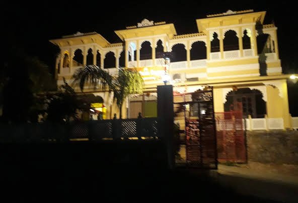

DEVI PALACE RESORT

Set along Lakhela Lake, this low-key hotel is 6 km from both Badal Mahal palace and Devi Temple. The NH162 national highway is 7 km away.
Warm rooms feature free Wi-Fi, TVs and sitting areas, as well as windows with lake views. All offer en suite wet rooms. A family room sleeps up to 3 guests. Room service is offered.
Parking is complimentary. Other amenities include a restaurant, a garden, and an outdoor pool with sunloungers.
| RATINGS |
| HOTEL 3 STAR |
| LOCATION-3.5 |
| FACILITIES-3.5 |
| FOOD-3.7 |
| CLEANLINESS-4.1 |
| ROOMS-4.1 |
| HOSPITALITY-4.3 |
HOTEL AMINITIES
| ROOM SERVICE |
| DOCTOR IN CALL |
| LAUNDRY |
| GUIDE SERVICE |
| SIGHTSEEING |
| BONFIRE |
| AIR CONDITIONER |
| MINERAL WATER |
| BALCONY/SIT OUT |
|
ROOMS
| FAMILY ROOMS |
| CLASSIC ROOMS |
| PREMIUM ROOMS |
| SUPERIOR ROOMS |